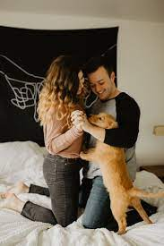

Home

Mrs.Carol adopted this dog from us 2years ago. She was all alone during
the lockdown and felt that she found a perfect companion in the dog to
regulate her stress and anxiety during the hard times.

Mr.Ragunath being a retired army officer adopted this dog 5 years ago. He
expressed that this dog was a good companion and made up for the boredom
of him as he was very playful and sometimes even naughty as a grandchild.

Mr and Mrs Verma adopted a pug 7 years ago. According to Mrs.Verma
"We felt very lifeless during the time we were having a difficulty to
give birth to a child.
This pug was a sigh of relief and become a good
companion in my life".

Being a student, Ms.shabana felt lonely during her studies abroad so she
adopted a pet cat 3 years. This cat was taken care of before adoption as
it was an infected stray cat. Knowing this she took good care of the cat
and the both immediately became good friends and she found a good
companion while she was away from her family.